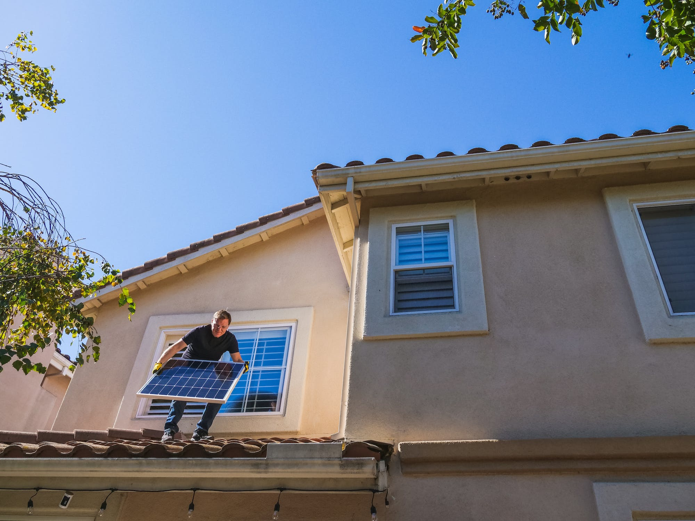
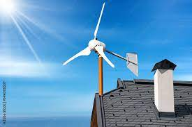
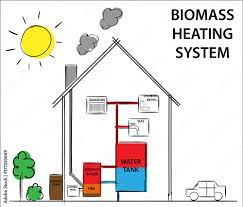

Although the initial investment in solar panels can be significant, they offer long-term cost savings. Once installed, solar panels can generate electricity for 25 years or more with minimal maintenance costs. Homeowners can also benefit from various financial incentives, such as net metering programs, which can further reduce the overall cost of solar installation.

Homes equipped with solar panels typically have higher property values and are more attractive to prospective buyers. Solar panels are considered a desirable feature because they offer potential energy savings and environmental benefits, making properties more marketable. .
In many regions, homeowners with small wind turbines can take advantage of net metering programs, allowing them to offset their electricity consumption with energy generated by the turbine and receive credit for any excess electricity fed back into the grid. Additionally, there may be financial incentives available to help offset the upfront cost of installing a wind turbine.

Small wind turbines are also suitable for remote or off-grid locations where access to the traditional power grid may be limited or costly. They can provide a reliable source of electricity for off-grid homes, cabins, agricultural facilities, or telecommunications towers.
Biomass energy projects can stimulate economic activity in rural areas by creating jobs in biomass production, processing, and energy generation. Additionally, by providing an additional revenue stream for farmers and landowners through the sale of biomass feedstocks, biomass energy can contribute to rural economic development and diversification.

Biomass energy can help address waste management challenges by utilizing organic waste materials that would otherwise be disposed of in landfills or left to decompose, releasing methane, a potent greenhouse gas. By converting these materials into energy, biomass systems can reduce the volume of waste and mitigate environmental impacts.